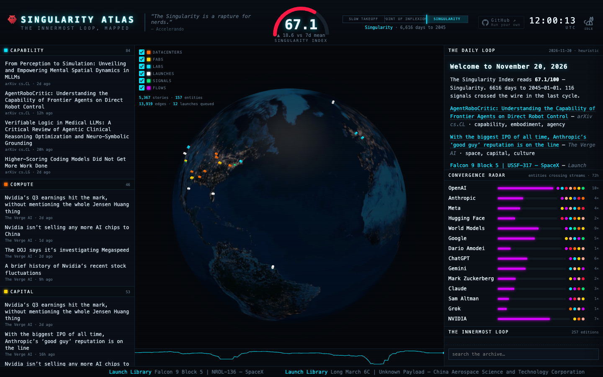

The Daily Loop
Welcome to November 20, 2026
The Singularity Index reads 67.9/100 — Singularity. 6616 days to 2045-01-01. 123 signals crossed the wire in the last cycle.
AgentRoboCritic: Understanding the Capability of Frontier Agents on Direct Robot Control — *arXiv cs.CL* · capability, embodiment, agency
With the biggest IPO of all time, Anthropic’s ‘good guy’ reputation is on the line — *The Verge AI* · space, capital, culture
Falcon 9 Block 5 | USSF-317 — SpaceX — *Launch Library* · space
Falcon 9 Block 5 | Cygnus CRS-2 NG-25 — SpaceX — *Launch Library* · space
Falcon 9 Block 5 | USSF-380 — SpaceX — *Launch Library* · space
System-One RSI: Building Muscle Memory for Interactive Agents through Guided Practice — *arXiv cs.AI* · agency, capability, compute
Falcon 9 Block 5 | Starlink Group 15-21 — SpaceX — *Launch Library* · space
Gemini on Mac can now use your computer — *The Verge AI* · capability, culture, capital, agency
Meta’s Muse Charm might cost $300 — *The Verge AI* · capital, agency, culture
Verifiable Logic in Medical LLMs: A Critical Review of Agentic Clinical Reasoning Optimization and Neuro-Symbolic Grounding — *arXiv cs.CL* · capability, agency
*Heuristic edition — local LLM offline.*